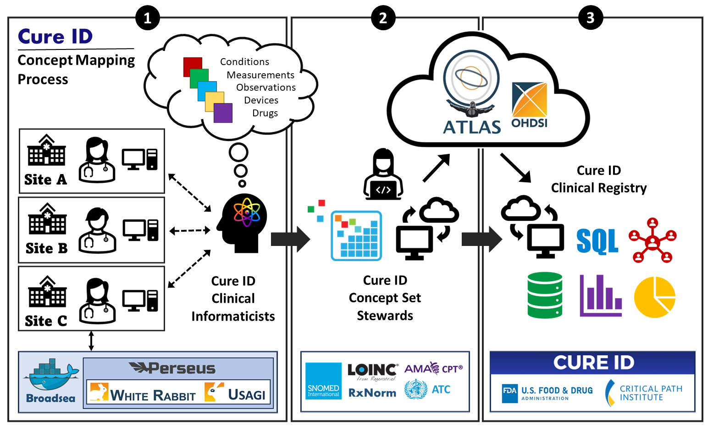

Support
Cure ID Concept Mapping Support

Collaborative OMOP Concept Mapping Process
CureID clinical informaticists work with each site to manually map internal concepts to OMOP concepts outlined for capture in the project plan.
The combined concepts from all sites are maintained as a single, updated concept set using the OHDSI ATLAS open-source tool.
All concepts currently identified by the work between CureID staff and each site, and all corresponding descendant concepts are exported from ATLAS as .json or .csv files for use in cohort creation, profiling, and clinical registry submission.
Identifying Oxygen Devices in Epic/Clarity
Identifying Oxygen Devices Flowsheet Measures to Map to OMOP Concepts
Geocoding and Integrating SDOH Data
To link geocoded addresses to the Neighborhood Atlas for getting the Area Deprivation Index (ADI) for patients in a dataset, you will typically follow these steps:
- Prepare Your Dataset Patient Data: Ensure you have a dataset of patients with addresses. This data should be anonymized to protect patient privacy. Geocoding: Each address needs to be geocoded. Geocoding is the process of converting addresses into geographic coordinates (latitude and longitude).
- Geocoding Addresses Use a Geocoding Service: Tools like Google Maps API, ArcGIS, or OpenStreetMap can be used to geocode addresses. This will give you the precise geographic location for each address. Accuracy Check: Ensure the geocoding is accurate. Incorrect geocoding can lead to wrong ADI assignments.
- Understanding the Neighborhood Atlas ADI Overview: The ADI is a measure developed by the Neighborhood Atlas. It provides a ranked and searchable list of neighborhoods according to their level of disadvantage. Data Format: Understand the format of the Neighborhood Atlas data. It typically includes geographical identifiers like census tracts.
- Linking Geocoded Data to the Neighborhood Atlas Match Coordinates with Census Tracts: Use the geographic coordinates to determine the corresponding census tract for each patient. This can be done using GIS software like ArcGIS or QGIS. Cross-Reference with ADI Data: Once you have the census tract for each patient, cross-reference these with the Neighborhood Atlas to find the ADI for each tract.
- Integrating ADI into Your Dataset Add ADI to Patient Records: For each patient, add the ADI corresponding to their census tract. This step integrates socioeconomic context into your patient data.
Geocoding
The primary consideration for linking geospatial data like social determinants of health and environmental risk factors with patient data is protecting PHI when geocoding patient home address and location data. Do not use web-based API services for geocoding as they require patient addresses to be sent to an external server for batch geocoding. Geocoding will require software that can match patient addresses to the appropriate shapefiles to determine a precise location and output latitudinal/longitudinal coordinates. Two software solutions for geocoding include: - Use ESRI ArcGIS or a similar program that can perform geocoding locally and has all appropriate shapefiles downloaded. This software is expensive, but many institutions have a license already in place. - Install geocoding software (ex: open-source, Degauss geocoder: https://www.degauss.org/geocoder) locally via manual installation or by installing a docker container.
Area Deprivation Index
The Area Deprivation Index (ADI) is based on a measure created by the Health Resources & Services Administration (HRSA) over three decades ago, and has since been refined, adapted, and validated to the Census block group neighborhood level by Amy Kind, MD, PhD and her research team at the University of Wisconsin-Madison. It allows for rankings of neighborhoods by socioeconomic disadvantage in a region of interest (e.g., at the state or national level). It includes factors for the theoretical domains of income, education, employment, and housing quality. It can be used to inform health delivery and policy, especially for the most disadvantaged neighborhood groups. “Neighborhood” is defined as a Census block group.
from: https://www.neighborhoodatlas.medicine.wisc.edu/
ADI as an OHDSI Concept
ADI is not included as an explicit concept in any of the appropriate standard vocabularies. The OHDSI Vocabularies Team recommended that this information be included in the OMOP data as a custom concept in the Observation table. The workflow will be simply to add a line item to the concept mapping table for Area Deprivation Index like the following example: concept_id = 2000000999 concept_code = NA concept_name = Area deprivation index domain = observation vocabulary = Custom is_standard = C include_descendents = False
OHDSI Tool Suite
The Edge Tool Suite are a set of OHDSI tools that should be deployed by the site that provide value around the OMOP CDM. This work was funded by the CURE ID initiative https://cure.ncats.io
The OHDSI open source software configured for deployment include:
The Atlas data science platform
The WebAPI backed for Atlas
The HADES statistical analysis packages
The Data Quality Dashboard
The Perseus ETL management system
Simplifying the ETL process
The OHDSI community has created a series of individual software packages to facilitate the ETL from proprietary EHRs to OMOP, evaluate data quality, define cohorts, and perform analyses. The “Edge Tool” packages these individual tools to facilitate the performance of an OMOP ETL and subsequent use of the data for defining cohorts for observational research. In contrast to registry approaches which ingest data represented in various data models and perform data harmonization centrally, software components of the “Edge Tool” facilitate ETL performance locally at the “edge.” This suite of software aims to drastically reduce the labor and effort required to go from “zero to OMOP.” We anticipate that institutions that use the full suite of offered software will be able to reduce the person-hours required for an OMOP ETL to as little as 50 hours.
Software components
The Edge Tool encompasses the Perseus ETL management solution, the HADES R analysis package within an RStudio Server R integrated development environment, and the ATLAS cohort discovery tool with WebAPI web services integration (Figure). The Perseus graphic-user interface (GUI) approach provides source-to-concept mapping for the ETL, with assisted extraction of data from EHR such as flowsheets (vital signs, nursing assessments), test measurements, and diagnoses. Rather than performing a series of SQL queries with wildcards to identify data elements of interest from primary source EHR tables,users may enter desired data element terms into a browser text field which are then matched using term similarity to source table entries.Users may then evaluate the completeness and quality of the ETL using the Data Quality Dashboard which performs >3,000 individual data quality checks on the OMOP-formatted data and is reported through a web-based reporting system.
In tandem with Perseus, OHDSI HADES and OHDSI ATLAS are the two projects within the Edge Tool that allow for advanced analysis once data has been harmonized with the OMOP CDM, such as generating cohorts for research, patient level prediction, treatment pathways, large scale population analytics, automated reporting and, optionally, participation in OHDSI network studies.The OHDSI applications within the Edge Tool have been containerized using OHDSI Broadsea, allowing for even easier deployment. Current use of the Edge Tool has proven promising and while limitations still exist - e.g., not currently capable of extracting data from unstructured fields such as notes or loose text - further process optimization and tool development will reduce this implementation time and effort further.
Ways to deploy the software
- Cloud vendor software configured for use.
OHDSI on Azure (Includes Perseus, Atlas, and Hades)
OHDSI on AWS (Includes Atlas and Hades)
- Broadsea provides a set of docker containers that ease the cost of implementation
Broadsea (Includes Atlas and Hades)
- Sites can compile the tools from the source repositories
OHDSI Specific
https://github.com/OHDSI/CommonDataModel
The ETL Process
https://github.com/OHDSI/Perseus
ATLAS and Cohort Discovery
Broadsea
Data Analysis
https://github.com/OHDSI/Achilles
Best Practices
Data Quality Dos and Don’ts
Do install the Data Quality Dashboard early on in the process.
Don’t include source values in your export - they might include PHI.
Don’t forget to check GitHub for the most recent version of the script before you run it.
Don’t send your data to the coordinating center until the tech team has a chance to review it with you in a live session.
Duplicated results have been reported at some sites when running script 02_CURE_ID_ALL_Tables.sql. However, at this time no root cause has been found. There is some belief that adding DISTINCT to the various SELECT statements could resolve the issue, while there is some concern over the latest updates to script 00_CURE_ID_create_concept_table.sql as it has standard concepts as well as standard descendants. Be sure to review your data carefully and report any signs of duplication so that it can be investigated.
Manuscripts
Webinars
OMOP Scripts for Epic
“The Spectrum Code”: scripts and documentation created by Roger Carlson at Corewell Health
RUMC OMOP transition scripts from Clarity, Caboodle: Code created by Rush University Medical Center
Using synthetic data
MIMIC-IV 100-patient demo dataset based on MIMIC to create a OMOP instance
Synthea GitHub site with files to use the synthetic patient generator Synthea
Eunomia LInk to the Eunomia GitHub.io site with instructions and standard dataset files
Useful Resources
Web site for the OHDSI community: http://www.ohdsi.org
The Book of OHDSI: What is OHDSI and why should I care?
EHDEN Academy : EHDEN Academy is a site with courses for developing skills working with OHDSI
Tutorials & Workshops : Tutorial sessions 1-8 provide a comprehensive overview from vocabularies and creating cohorts to prediction
OHDSI Forums : Searchable, active user community
OHDSI Community Dashboard : Tracks publications, citations, researchers and activity within the OHDSI community
Clinical Registry Efforts Within OHDSI (Sept. 13 Community Call): Video discussing Perseus and Broadsea
OHDSI-in-a-Box on GitHub : A learning environment created for the OHDSI community
Integrating Flowsheet Data in OMOP Common Data Model for Clinical Research Paper written by informatics teams at Stanford University and The Hospital for Sick Children
Guide to privacy issues in OMOP journey: Article outlining how to manage protected health information
DQD GitHub repository for Data Quality Dashboard tool
PheKB A phenotype repository
Analyze observational patient data by using OHDSI with the OMOP CDM Microsoft guide to OMOP CDM
OHDSI on Azure GitHub Automation code and documentation for deploying OHDSI CDM in Azure
OHDSI/Perseus GitHub site OHDSI/Perseus on GitHub
How to develop capacity for observational research within a health system Presentation on building capacity from 2022 OHDSI Collaborator Showcase